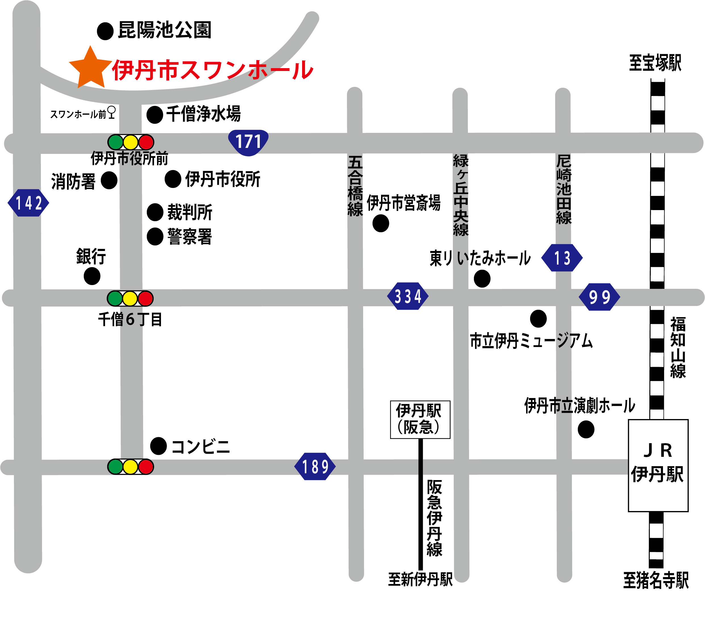

アクセス
アクセスマップ

所在地
〒664-0015
兵庫県伊丹市昆陽池2-1
交通アクセス
- 市バスJR・阪急両伊丹駅前4番のりばから17系統伊丹市役所西経由 西野武庫川センター前行きでスワンホール前下車すぐ。
- 市バスJR・阪急両伊丹駅前2番のりばから14系統 昆陽里行きで伊丹市役所前 下車徒歩6分。
- 車で国道171号線市役所前交差点を北へ約300m。
駐車場
スワンホールの駐車場がございます。
当初の60分は無料とし、当該60分を超えたときは、30分 (30分未満の端数が生じたときは30分とする。)につき150円とする